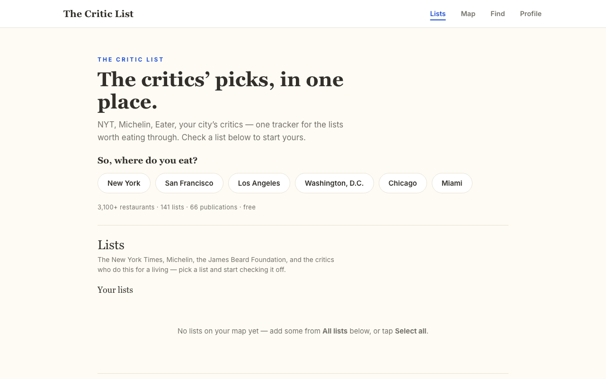

The Critic List
the critics' picks, in one place
what it is
A restaurant tracker built around the critics' lists — the New York Times, Michelin, Eater, the James Beard Foundation, and the local critics who do this for a living. Pick a list, check off where you've been, and eat your way through the rest. 3,100+ restaurants across six cities, free.
the problem
The lists worth eating through are scattered across 66 publications — paywalled articles, screenshots, open tabs. There was no one place to see them together, keep score, and know what's left.
how it works
Choose a city — New York, San Francisco, LA, D.C., Chicago, Miami — add the lists you care about, and check off restaurants as you go. The map shows everything at once; your progress follows you between lists.
see it
thecriticlist.com — live and free, or get it on the App Store.
